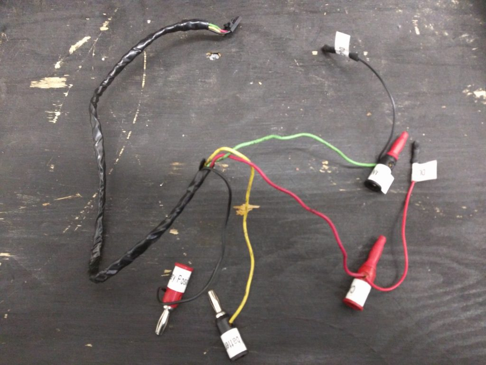
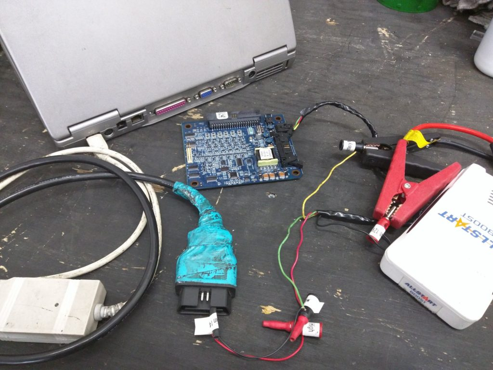

This post summarizes the cables/adapters that are used for various functions in Think service. I refer to a cable as a simple conductor with a connector at either end. When a piece of hardware incorporates electronics that perform some sort of signal conversion I call it an adapter, converter, module, etc.
{kind=link}
This bit of hardware is used with the Think Diagnostics program, aka Think TechCentre. And that’s all it’s used for. I call it a VIM because that’s consistent with what some other auto manufacturers call it, but I think it is actually labeled as a VCI (Vehicle Communication Interface), and if you go digging through your Device Manager on Windows to find it, it will be called 3G SVG– something like that, and I don’t know what it stands for. There are actually two cables that connect to it, but I leave them attached all the time so it functions as one unit. From the car-side, it starts with the standard 16-pin OBD-II diagnostic connecter (aka DLC, Data Link Connector). The cable from the DLC connects to the VIM via a serial port (RS-232, 9-pins, looks kind of like a rounded trapezoid shape). (I was totally wrong about this it’s not just a serial port– it’s something more exotic/specialized.) The VIM connects to a computer via a cable with an RJ-9 jack (just like an old-school wired phone) on the VIM side and a USB on the computer side.
{kind=link}
The white piece of hardware is a CAN (Controller Area Network) interface, and the manufacturer’s brand name is Peak, thus commonly referred to as the PCAN thing/cable/adapter/whatever. It connects to a serial port on one end and USB on the other. The black part is simply a cable that connects a Serial port to DLC (Data Link Connector, the universally mandated connector shape for all OBD-II compliant vehicles). (The blue tape on the end is just there to make it easier for me to tell it apart from the VIM DLC connector.) The black cable is also exactly the same as the cable that is attached to the VIM. In a pinch and only had one I could switch it back and forth between the VIM and the PCAN adapter. (Apparently I never was in a pinch, because that wouldn’t have worked at all! The VIM cable looks just like a serial connector on one end, but it is not.)
The PCAN adapter is used with Enerdel’s CommTool software and just about everything else. The only notable exceptions are Think TechCentre and C167 Loader (for programming the PCU). It’s shown connected to the serial-DLC cable here, but is also used with the battery wire harness (when the traction battery is removed from the car) and the RLEC harness.
{kind=link}
This cable is used to reflash the PCU using the C167 Loader program. Newer laptops that do not have serial ports must use a serial-USB converter like the one shown below. This connector can also be used with the CHAS program for gathering data directly from the PCU, but for that purpose a serial-USB converter is not allowed (I think because it would slow the communication down too much), so you have to have a fairly old laptop.
{kind=link}
This is a generic piece of hardware. It converters serial data to USB format. It is used with the SIADIS cable above to reflash the PCU with the C167 Loader program. I don’t know what SIADIS is exactly; it seems to be Siemens software for motor inverters, but I’m not really sure.
{kind=link}
This is the low voltage wire harness that connects the car to the traction battery, but it has been modified to allow a computer to connect to the battery directly while the battery is removed from the car. It requires the PCAN adapter to be connected to the serial port, and a 12V power source connected to the indicated banana plugs. This can be used to reflash the MLEC (Master Lithium Energy Controller) using the ProgTool program, read and write the EEPROM data from the MLEC using the EEPROM Data Tool program, and general diagnosis using CommTool.
I only own one of these modified low voltage traction battery wire harnesses, so if you rent the diagnostic kit, you will not find it included. Instead you will need to connect to the battery through the car: Electrically connect the high voltage and low voltage connectors from the car to the traction battery, and bolt the ground strap from the chassis to the battery case. (I once got lazy about the ground strap, and it caused me intermittent communication errors– it’s definitely not a step worth skipping.) Connect the laptop to the car’s DLC via the PCAN adapter and perform any battery-related tasks that are otherwise described using the modified low voltage traction battery wire harness.
{kind=link}
This is the harness that connects the 2 RLECs on each battery module; it has been modified to be used with the battery harness above (and PCAN adapter) to program the identity (1 through 16) (aka slave index, and actually it gets programmed in hexadecimal 0 through F) of an RLEC that has been replaced. (For the details of software side of this procedure, go to this post.) The banana plugs on the 4-wire RLEC wire harness pictured above are specifically for connecting through the modified low voltage traction battery wire harness, but I have made an additional modification to allow that middle-hardware to be bypassed:

This 4-wire RLEC wire harness has spade connectors that fit onto the pins of the DLC male connector. Here’s what it looks like when everything is connected for programming an RLEC’s slave index:

If I don’t want to loan you my only 4-wire RLEC harness, you may have to make your own. You certainly don’t need banana plugs. For the 12V you may simply elect to have bare wire that you clamp onto with alligator clips or similar. But you will need to figure out a good way to connect the CAN wires to the pins of the DLC.
Here are the pin numbers, wire colors, and circuit descriptions for the 4-wire RLEC harness:
- 1: Black, Positive (+) 12 Volts
- 2: Red, CAN High (+), DLC pin 6
- 3: Green, CAN Low (-), DLC pin 14
- 4: Yellow, ground for 12 Volts
The battery harness and RLEC harness are not required unless diagnosis and repair are being performed on a battery removed from a car.